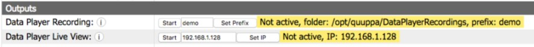

QDP Recording and Live View streaming are controlled through QPE Web Console. Both
can also be configured to start automatically at system startup.

To enable automatic Recording or Live View streaming:
-
Open the project with Quuppa Site Planner (QSP).
-
In the panel on the left, choose the project folder,
topmost in the tree.
-
In the panel on the right, you will see settings for the Data Player.
-
Check Start at system startup for recording and/or live
view.
-
Submit the project.
-
Do file sync in the QPE Web Console.
The system will record data to folder /opt/quuppa/DataPlayerRecordings.
Tip: If your system does not automatically create this folder, you
have to create it manually. Typically this happens if the QPE doesn’t have
the access rights to create the folder. If you create the folder manually,
you should make sure the system has rights to add files to it.
Note: The Quuppa Data Player uses a proprietary file format (.quuppadatalog)
that can only be generated with the QPE and QDP, and opened with the QDP.
The generated file contains both recorded data and the quuppaproject file.
With the Quuppa Push & Log -module enabled, log files in .csv format can
be exported from QDP.